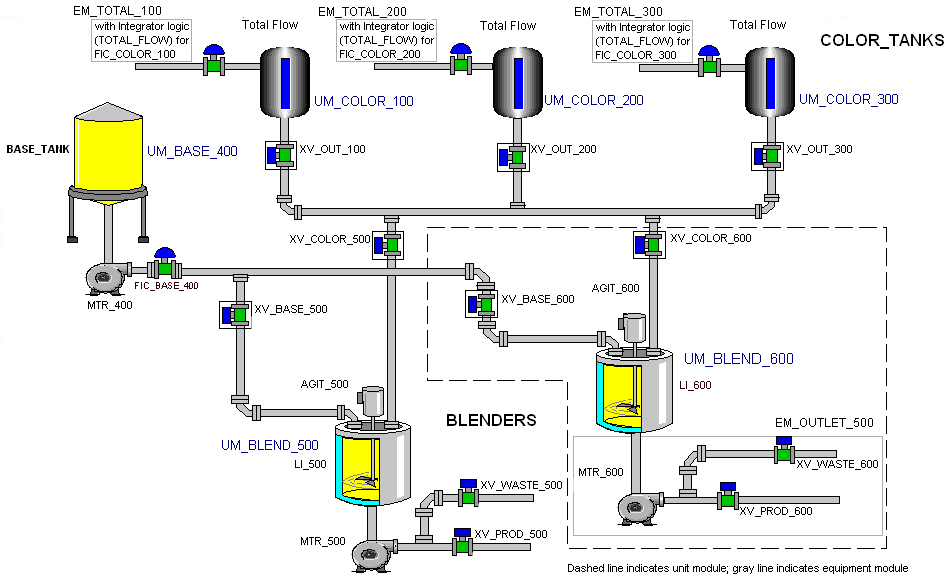

Overview of the Batch Tutorial
In this tutorial, the sample batch application is a paint blending system. Two raw materials are required: the paint base (a pre-mixed blend of liquid, binder, and additives) and the color (one or more of three colors).
The amount of each raw material required for a particular recipe is specified in gallons. After the holding tanks are charged with the required volume of the paint base and color, recipe-specified amounts of the ingredients are transferred to one of two blenders. The materials are then mixed for the period of time specified in the recipe. After blending, a good batch can be transferred to product storage and a bad batch can be transferred to a waste area.
The diagram below shows the equipment for the hypothetical system: a base tank, three color tanks, and two blenders. In the tutorial lessons that follow, we will configure the equipment and the batch control strategy for this application.
Consider printing this topic, as the diagram below is referenced frequently.
